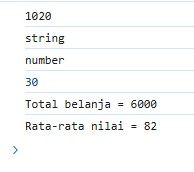

Nama: Muziana Pangestu
Kelas: X PPLG 1
let a = "10";
let b = "20";
console.log(a + b);Hasil tersebut terjadi karena a dan b bertipe String sehingga operator + menggabungkan teks.
Variabel a dan b bukan Number, melainkan String.
Prediksi benar jika hasil yang diperkirakan adalah 1020.
let nama = "Asep";
let umur = 16;
console.log(typeof nama);
console.log(typeof umur);Variabel nama: string
Variabel umur: number
String digunakan untuk teks, sedangkan Number digunakan untuk angka.
let a = "10";
let b = "20";
let hasil = Number(a) + Number(b);
console.log(hasil);let harga = Number(prompt("Masukkan harga:"));
let jumlah = Number(prompt("Masukkan jumlah:"));
let total = harga * jumlah;
console.log("Total belanja = " + total);Harga: Rp10.000
Jumlah: 3 barang
Total seharusnya: Rp30.000
Total program: Rp30000
let tugas = Number(prompt("Masukkan nilai tugas:"));
let uts = Number(prompt("Masukkan nilai UTS:"));
let uas = Number(prompt("Masukkan nilai UAS:"));
let rataRata = (tugas + uts + uas) / 3;
console.log("Rata-rata nilai = " + rataRata);
1. Mengapa prompt() perlu dikonversi?
Karena prompt() menghasilkan String. Number()
diperlukan agar input dapat dihitung sebagai angka.
2. Apa perbedaan "10" dengan 10?
"10" merupakan String, sedangkan 10 merupakan Number.
3. Apa yang terjadi jika lupa Number()?
"10" + "20" menghasilkan "1020", bukan 30.
Pair: Jawaban dapat sama jika pemahaman tentang tipe data sama. Perbedaan dapat terjadi karena pemahaman yang berbeda.
Share: Input prompt() harus dikonversi menjadi Number jika ingin digunakan untuk perhitungan.
Membuat program kasir dengan validasi input.
☑ Saya dapat membedakan String dan Number.
☑ Saya memahami prompt() menghasilkan String.
☑ Saya dapat menggunakan Number().
☑ Saya dapat menggunakan String().
☑ Saya dapat menemukan kesalahan tipe data.
☑ Saya dapat membuat program perhitungan sederhana.
Sesuaikan penilaian ini dengan kemampuanmu sendiri.Total belanja akan muncul di sini.
